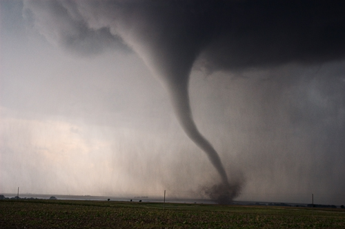
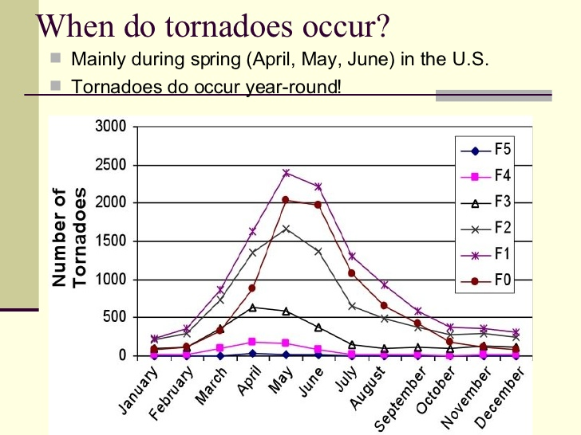

This page explains what to do when you recieve or get a warning alert from the Nation Weather Services for your local area and what to do before, during and after A Tornado.
A Tornado is a rapidly roatating column of air that is in contact with both the surface of the Earth and a funnel cloud or, in rare cases, thr base of a funnel cloud. Tornadoes could cause death, injury, and damage to homes, the environment and humans depending on the severity of the tornado. The rapid spinning in a tornado is the result of the updrafts and downdrafts in the thunderstorm connecting with the wind shear, coming in a tilt of the wind shear to form an upright tornado vortex.There are different types of tornadoes in regards to the strength of them. F1, F2, F3, F4, anfd F5. F1 being the weakest and F5 being the strongest.
Even though the United Kingdom have more tornadoes than the United States, the tornadoes in the UK are fairly weak and the tornadoes in the Unted States are more bstronger with F5's and F4's at a high rate.
Tornadoes usually occur during the spring and summer months because of the weather patterns and changes. Tornadoes often form when cool, polar air traveling southeastward from the Rockies overrides warm, moist, unstable air.
On May 20, 2013, an intense and destructive EF5 tornado struck Moore, Oklahoma, and adjacent areas, with peak winds estimated at 210 mph (340 km/h), killing 24 people(plus one indirect fatality)and injuring 377 others. This tornado was apart of a larger weather system with several other strong tornadoes across the Great Plains, including five that struck small parts of Central Oklahoma. This tornado had a major effect on the state of Oklahoma. The Oklahoma Department of Emergency Management reported that 24 people were killed (with another death indirectly attributed to the tornado). An estimated 1,150 homes were destroyed, resulting in an estimated $2 billion in damages. 377 people were injured. The subdivisions in Oklahoma were destroyed and the houses we completed wiped out in the large city. The majority of a neighborhood just west of the Moore Medical Center was destroyed. Witnesses said the tornado more closely resembled "a giant black wall of destruction" than a typical twister.
There are for steps on how a tornado is formed. The first step;Warm, moist air, usually from the south, is lifted by a warm or cold front, causing an updraft. The moisture condenses into clouds and precipitation and forms a thunderstorm. Second step;Precipitation should counter the updraft, but when winds blow precipitation out of the rising air, the updraft strengthens. Beneath the storm, winds of different speeds (shear) form horizontal tubes of rotating air. Third step;When those tubes are ingested into the updraft, they become vertical and the storm acquires rotation, forming a supercell. Fourth step;The rotating tube is stretched, and the supercell becomes like a giant vacuum, sucking air up and away. As air rushes in to equalize the pressure, a tornado is formed.